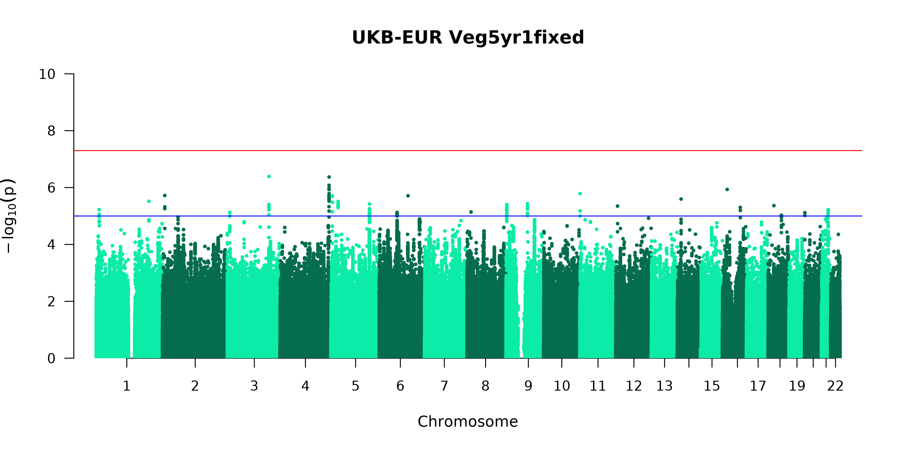
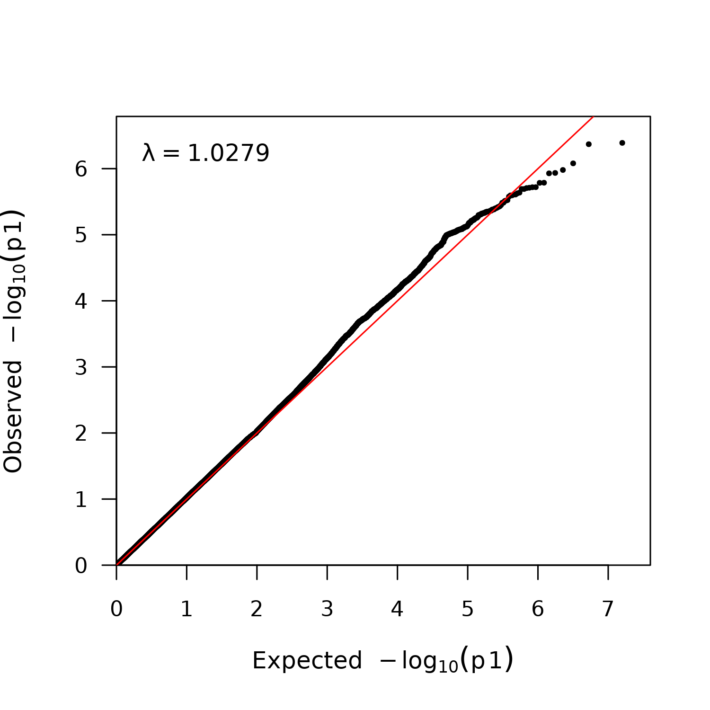

GWAS was performed in Regenie v3.1.2. Regenie is optimized for use with traits that have imbalanced case:control ratio (our veg:non-veg was approx 1:75).
https://github.com/rgcgithub/regenie
https://rgcgithub.github.io/regenie/
I followed their UKB recommendation settings: https://rgcgithub.github.io/regenie/recommendations/
Step 0 prepares a single genotype file of high quality variants from the UKB variant call files (non-imputed) for use in Step 1 (whole genome regression).
#!/bin/bash
#SBATCH --partition=highmem_p
#SBATCH --job-name=genoQC-combine
#SBATCH --nodes=1
#SBATCH --ntasks-per-node=16
#SBATCH --time=144:00:00
#SBATCH --mem=190000
#SBATCH --output=%x.%j.out
#SBATCH --error=%x.%j.err
#---#SBATCH --array=1
cd /work/kylab/mike/BioxVeg/genotypeQC
#---------
#Set which
#steps run
#---------
step1=F
#Cancel array jobs below here-----
step2=F
step3=true
#---------
if [ $step1 = true ]; then
ml PLINK/2.00-alpha2.3-x86_64-20210920-dev
i=$SLURM_ARRAY_TASK_ID
###-=-=-=-=-=-=-=-=-=-=-=-=-=-=-=-=-=-=-=-=-
###STEP 1. GENOTYPE QC PLINK-=-=-=-=-=-=-=-=
###-=-=-=-=-=-=-=-=-=-=-=-=-=-=-=-=-=-=-=-=-
echo "-=-=-=-=-=-=-=-STEP 1-=-=-=-=-=-=-=-\n\n"
genoindir=("/scratch/mf91122/bgen_v1.2_UKBsource")
mfiscoredir=("/work/kylab/mike/UKB/quality-scores/mfi")
outdir=("/scratch/mf91122/BioxVeg/genotypeQC/chr")
mkdir -p $outdir
plink2 \
--bgen $genoindir/ukb_imp_chr"$i"_v3.bgen ref-first \
--sample $genoindir/ukb_imp_v3.sample \
--extract $mfiscoredir/ukb_mfi_keepsnps_chr"$i".txt \
--mind 0.05 \
--geno 0.02 \
--hwe 1e-06 \
--maf 0.01 \
--keep /scratch/mf91122/LipidsxVeg/pheno/LipidsxVeg_phenoQC_IDS.txt \
--set-missing-var-ids @:#:\$r:\$a \
--rm-dup force-first \
--new-id-max-allele-len 414 \
--max-alleles 2 \
--make-pgen \
--out "$outdir"/chr"$i"
fi
if [ $step2 = true ]; then
###-=-=-=-=-=-=-=-=-=-=-=-=-=-=-=-=-=-=-=-=-
###STEP 2. COMBINE=-=-=-=-=-=-=-=-=-=-=-=-=-
###-=-=-=-=-=-=-=-=-=-=-=-=-=-=-=-=-=-=-=-=-
calldir=("/scratch/mf91122/BioxVeg/genotypeQC/originalCalls")
outdir=("/scratch/mf91122/BioxVeg/genotypeQC/combineCalls")
mkdir -p $outdir
#Make list
rm -f "$calldir"/merge.txt
for chr in {2..22}; do echo "/scratch/mf91122/BioxVeg/genotypeQC/originalCalls/ukb_cal_chr${chr}_v2.bed /scratch/mf91122/BioxVeg/genotypeQC/originalCalls/ukb_snp_chr${chr}_v2.bim /scratch/mf91122/BioxVeg/genotypeQC/originalCalls/ukb48818_cal_chr1_v2_s488282.fam" >> $calldir/merge.txt; done
ml PLINK/1.9b_6-24-x86_64
plink \
--bed $calldir/ukb_cal_chr1_v2.bed \
--bim $calldir/ukb_snp_chr1_v2.bim \
--fam $calldir/ukb48818_cal_chr1_v2_s488282.fam \
--merge-list $calldir/merge.txt \
--make-bed \
--out $outdir/ukb_cal_allChrs
fi
if [ $step3 = true ]; then
outdir=("/scratch/mf91122/BioxVeg/genotypeQC/combineCalls")
ml PLINK/2.00-alpha2.3-x86_64-20210920-dev
plink2 \
--bfile $outdir/ukb_cal_allChrs \
--maf 0.01 --mac 100 --geno 0.1 --hwe 1e-15 \
--mind 0.1 \
--write-snplist --write-samples --no-id-header \
--out $outdir/qc_pass
fi#!/bin/bash
#SBATCH --partition=highmem_p
#SBATCH --job-name=regenie-step1
#SBATCH --nodes=1
#SBATCH --ntasks-per-node=16
#SBATCH --time=72:00:00
#SBATCH --mem=100000
#SBATCH --output=%x.%j.out
#SBATCH --error=%x.%j.err
cd /work/kylab/mike/BioxVeg/regenie/GWAS
ml regenie/3.1.3-conda
phenodir=("/scratch/mf91122/BioxVeg/pheno/regenie")
step1genoindir=("/scratch/mf91122/BioxVeg/genotypeQC/combineCalls")
outdir=("/scratch/mf91122/BioxVeg/regenie/VegGWAS/Step1")
mkdir -p $outdir
regenie \
--step 1 \
--bed $step1genoindir/ukb_cal_allChrs \
--extract $step1genoindir/qc_pass.snplist \
--keep $step1genoindir/qc_pass.id \
--phenoFile $phenodir/phenoveg.txt \
--phenoColList Veg5yr1 \
--covarFile $phenodir/covar.txt \
--covarColList Age,PCA1,PCA2,PCA3,PCA4,PCA5,PCA6,PCA7,PCA8,PCA9,PCA10,Townsend \
--catCovarList Sex,Geno_batch,AlcoholFreq,PreviousSmoker,CurrentSmoker \
--bt \
--bsize 1000 \
--lowmem \
--lowmem-prefix $outdir/regenie_tmp_preds \
--out $outdir/ukb_step1_Veg2GWAS
sbatch /work/kylab/mike/BioxVeg/regenie/GWAS/step2.sh#!/bin/bash
#SBATCH --partition=batch
#SBATCH --job-name=regenie-VegGWAS-step2
#SBATCH --nodes=1
#SBATCH --ntasks-per-node=16
#SBATCH --time=72:00:00
#SBATCH --mem=40000
#SBATCH --output=%x.%j.out
#SBATCH --error=%x.%j.err
#SBATCH --array=1-22
i=$SLURM_ARRAY_TASK_ID
cd /work/kylab/mike/BioxVeg/regenie/GWAS
ml regenie/3.1.3-conda
phenodir=("/scratch/mf91122/BioxVeg/pheno/regenie")
step1genoindir=("/scratch/mf91122/BioxVeg/genotypeQC/combineCalls")
step1dir=("/scratch/mf91122/BioxVeg/regenie/VegGWAS/Step1")
step2genoindir=("/scratch/mf91122/BioxVeg/genotypeQC/chr")
outdir=("/scratch/mf91122/BioxVeg/regenie/VegGWAS/Step2")
mkdir -p $outdir
regenie \
--step 2 \
--pgen $step2genoindir/chr"$i" \
--phenoFile $phenodir/phenoveg.txt \
--phenoColList Veg5yr1 \
--covarFile $phenodir/covar.txt \
--covarColList Age,PC1,PC2,PC3,PC4,PC5,PC6,PC7,PC8,PC9,PC10,Townsend \
--catCovarList Sex,Geno_batch,AlcoholFreq,PreviousSmoker,CurrentSmoker \
--bt \
--firth --approx --pThresh 0.01 \
--pred $step1dir/ukb_step1_Veg2GWAS_pred.list \
--bsize 400 \
--out $outdir/ukb_step2_Veg2GWAS_chr"$i"suppressMessages(library(qqman))
suppressMessages(library(tidyverse))
#devtools::install_github('kaustubhad/fastman')
library(fastman)
mancolors<-list(c("#0CEBA8", "#066C4E"))
dir="/scratch/mf91122/BioxVeg/regenie/VegGWAS/Step2"
p="Veg5yr1"
chr=list()
for (c in 1:22){
chr[[c]]=as_tibble(read_delim(paste(
dir, "/ukb_step2_Veg2GWAS_chr",c,"_",p,".regenie", sep="")))
}
file=do.call(rbind,chr)
file2<-file%>%select(CHROM, ID, GENPOS, LOG10P)
file2$P=10^(-file2$LOG10P)
file2=file2%>%select(-LOG10P)
colnames(file2)=c("CHR", "SNP", "BP", "P")
suppressWarnings(dir.create(paste(dir, "/../plot", sep="")))
plotoutputpath=paste(dir, "/../plot/",p,"-regenie-Manhattan.labeled.png", sep="")
#Make Manhattan plot P_BOLT_LMM
png(filename=plotoutputpath, type="cairo",
width = 10, height = 5, units = 'in', res = 300)
print(
manhattan(file2,
main = paste("UKB-EUR ",p, "fixed", sep=""),
ylim = c(0, 10),
cex = 0.6,
#annotatePval = 5e-05,
annotateTop = TRUE,
cex.axis = 0.9,
col = mancolors[[1]],
suggestiveline = -log10(1e-05),
genomewideline = -log10(5e-08),
chrlabs = as.character(1:22)
)#end manhattan
);dev.off()
qqoutputpath=paste(dir, "/../plot/", p,"-regenie-fastQQ.png", sep="")
png(filename=qqoutputpath, type="cairo", width = 5, height = 5, units = 'in', res = 300)
fastqq(file2$P)
dev.off()
